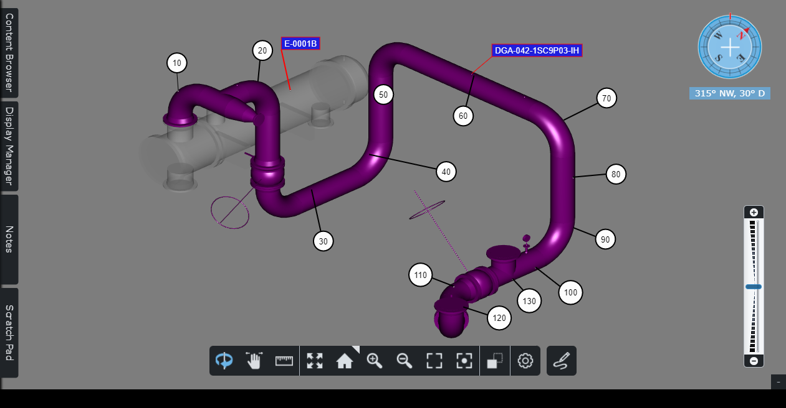
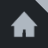
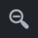
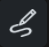
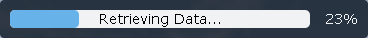

ビューア
ビューアはビューの 3D コンテンツをレンダリングし、ビューア ツールバー、ナビゲーション コンパス、コンテンツ ブラウザ、メモ エクスプローラ、およびスクラッチ パッドを表示します。
ナビゲーションコンパス ビューの方向と傾斜を度単位で示します。コンパスの北矢印は植物の北を指します。
ビューの方向と視点は、ビューア ツールバー、マウス、および/またはタッチ スクリーン ジェスチャを介して操作できます。
コンテンツブラウザを使用すると、ナレッジビューのアセットコンテンツを探索/参照できます。コンテンツ ブラウザの詳細については、ここをクリックしてください。
表示マネージャーを使用すると、ビューアーに表示される内容を管理できます。ディスプレイマネージャーの詳細については、ここをクリックしてください。
ノートエクスプローラーを使用すると、ナレッジビューのノートを探索して追加できます。ナレッジビューノートの操作方法については、ここをクリックしてください。
スクラッチパッドを使用すると、スクラッチ パッド ページを探索できます。スクラッチパッドページの操作方法については、ここをクリックしてください。

ビューアツールバー

アクティブなモードまたはコマンドが強調表示されます。
|
|
アクティブ | 非活動中 |

ビューアのツールバーには次の機能があります。
| ビューアを検査モードに設定します。検査モードでは、ビューを回転、パン、またはズームしてアセットを選択できます。 |
| ビューアをパンモードに設定します。パン モードでは、ビューをパンまたはズームしてアセットを選択できます。 |
| ビューアを測定モードに設定します。測定モードでは、パン、ズーム、測定点の配置を行うことができます。 |
| すべてズーム- 表示されているすべてのアセットをビューの中央に配置するコマンド。 |
 | ホーム- ビューをデフォルトのナレッジビューのカメラの方向、位置、および 3D 投影に戻すコマンド。 |
| ズームイン- ビューア内のアセットにズームインするコマンド。 |
 | ズームアウト- ビューア内のアセットからさらにズームアウトするコマンド。 |
| Zoom エリア - ビューを長方形のエリアにズームするコマンド。 「エリアのズーム」アイコンをクリックすると、長方形のエリアを定義できます。 |
| フォーカス- ビューアの焦点を設定するコマンド。 [フォーカス] コマンドをクリックすると、ビュー内のアセット上の焦点を選択できます。焦点を選択すると、ビューの焦点が中央に配置されます。 |
| X-ray - ビューア内のすべてのアセットが、X 線画像に似た灰色の透明な外観を使用して表示されるように設定するコマンド。不透明に表示されたままになる唯一のアセットは、現在選択されているアセットです。したがって、この表示モードは、大規模なシーン内で選択されたアセットをすばやく見つけるのに役立ちます。 |
| 設定- ビューアの設定を変更するコマンド。コマンドをクリックすると、キャンバスの余白、コンパスとズーム スライダーの表示、3D 投影、照明モード、メモリ制限を設定できます。ビューア設定の詳細については、ここをクリックしてください。 |
 | スクラッチ パッド ページの作成- 新しいスクラッチ パッド ページを作成するコマンド。 「スクラッチパッド」を参照してください。 |


ズームスライダー
ズーム スライダーを使用すると、焦点に向かって移動したり、焦点から遠ざけたりすることができます (ズームイン、ズームアウト)。

ステータスバーの読み込み中
ビューアにアセットをロードするプロセスは、時間がかかる場合があります。読み込みステータス バーには、ビューアのコンテンツの読み込みの進行状況が表示されます。ビューアの進行状況は、ビューアに表示されるものの読み込みの進行状況のみを示します。たとえば、カメラが回転すると、進行状況バーに現在のカメラの視点の読み込みの新しい割合が表示されます。

読み込みステータス バーは、次の 2 つの状況で表示されなくなります。
- コンテンツがビューアに完全に読み込まれたとき。
- メモリのしきい値に達したため、これ以上コンテンツをロードできない場合。
メモリのしきい値に達した場合、右下隅にアイコンと情報が表示されます。

ビューアが使用できるメモリの量は設定できます。 「設定」を参照してください。
許可されるメモリを増やすと、ビューアのパフォーマンスが低下する可能性があるため、注意することをお勧めします。 |